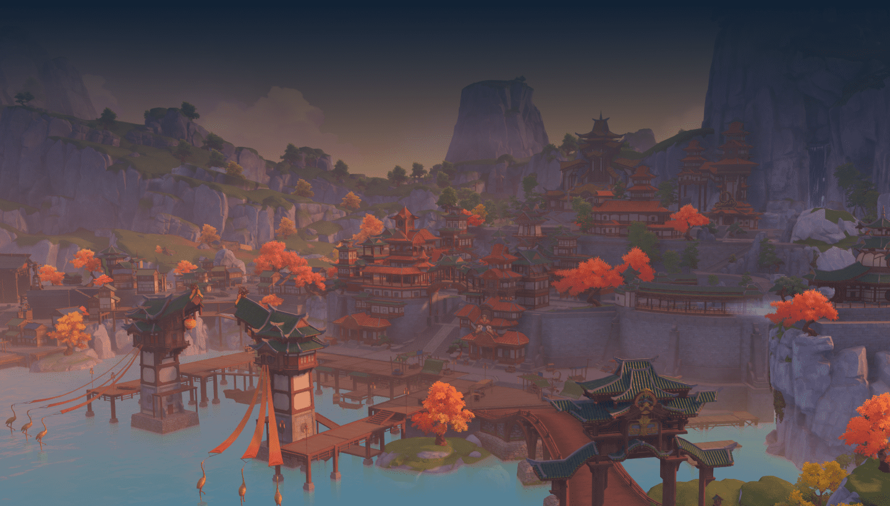
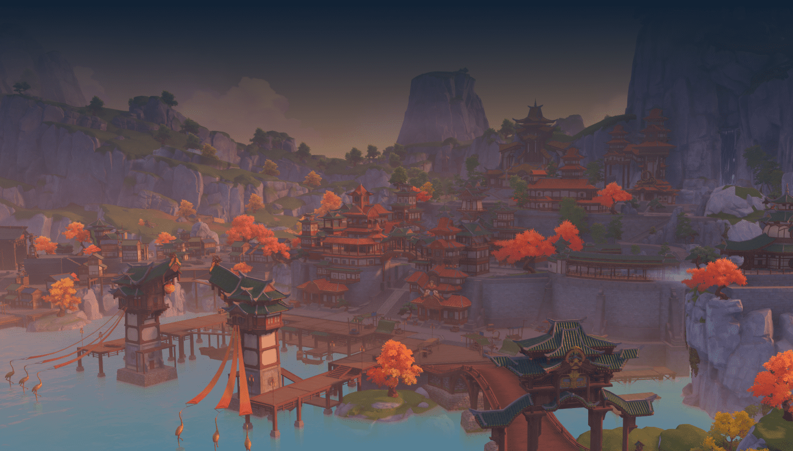

Inazuma
Inazuma himself was inspired by Japan. The country that worships Raiden Shogun the Electro Archon is located 4 kilometers southeast of Liyue Harbor. Atsuko, one of the residents of Inazuma who defected to Liyue, describes Inazuma as a dangerous.
See Characters